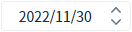

Spinner의 'initValue' 속성을 사용하여, 초기값을 설정한 예제입니다.
숫자형 초기 값 지정하기
날짜형 초기 값 지정하기
예제 영역 'dataType="number"'에서 테스트합니다.1
실행 결과를 확인합니다.
컴포넌트의 초기 설정 값을 확인합니다.
초기 값이 '0'으로 설정되었습니다.
Image 1.브라우저(Chrome) 실행 예시
예제 영역 'dataType="date"'에서 테스트합니다.1
실행 결과를 확인합니다.
컴포넌트의 초기 설정 값을 확인합니다.
초기 값이 '20221130'으로 설정되어 '2022/11/30'이 표시됩니다.
Image 2.브라우저(Chrome) 실행 예시

1
STEP 1: 속성을 설정합니다.
[필수] initValue="초기 값"
초기 값을 지정합니다.
ex) initValue="0"
Example 1.Source
<!-- spinner의 소스 본문 예시 --> <w2:spinner initValue="0" id="spi_exam1"> </w2:spinner>
initValue